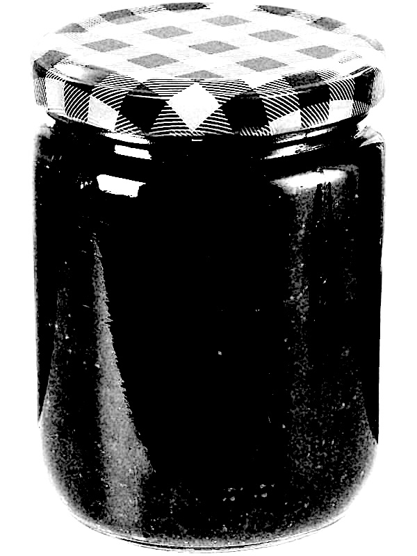

JAMMED DOOR is intended to be a place to collect, share and connect the stranger sides of music. It is a society that focuses on philosophical discussion of music and pushes for an experimental mediums of these discussions.
The society's aim is to create a space for a dialectic treatment of music. HOWEVER this is NOT an academic organisation. The priority here is primarily THOUGHTFUL LISTENING and GENERATIVE DISCUSSION aimed at A GENERAL AUDIENCE.
People of ALL professions, ages, backgrounds and experiences are WELCOME. This society is based on GENUINE RESPECT for eachother and a DEEP in interest in UNUSUAL MUSIC.
Started in 2022, Jammed Door has existed as a WhatsApp chat to share recommendations, discuss tracks and promote unusual music-adjacent events. It has always been a place for people to find other interesting people to collaborate, discuss and exchange recommendations with.
The youthful message when I conceived of the project was to 'unjam' the doors of perception by jamming, however far from being 'traditionally musical' those jams needed to be, as long as they got the message across. I wanted to create a music listening club where music was discussed in a music adjacent mediums, not just verbally.
The next steps for Jammed Door are offline events and putting out collaborative music.
If you would be interested in being involved, donating or have an idea, please get in touch by email: contact.pazzoprod@gmail.com
Similarly, to be added to WhatsApp chat, please email the above with your name, phone and a bit about yourself